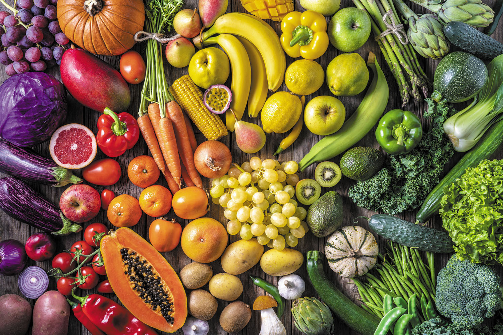

Fruits & Vegetables
Fruits & Vegetables
Fruits & Vegetables
Fruits & Vegetables
Fruits & Vegetables
Fruits & Vegetables
-
Vegetables and fruits are an important part of a healthy diet, and variety is as important as quantity.
-
No single fruit or vegetable provides all of the nutrients you need to be healthy. Eat plenty every day.
IMAGE OF FRUITS AND VEGETABLES

VIDEO OF FRUITS AND VEGETABLES
Vegetables
- carrot
- beetroot
- raddish
- drumstick
Fruits
- apple
- avacado
- mango
- orange